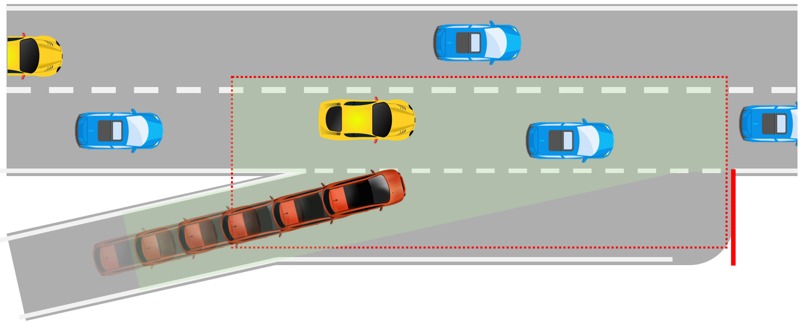
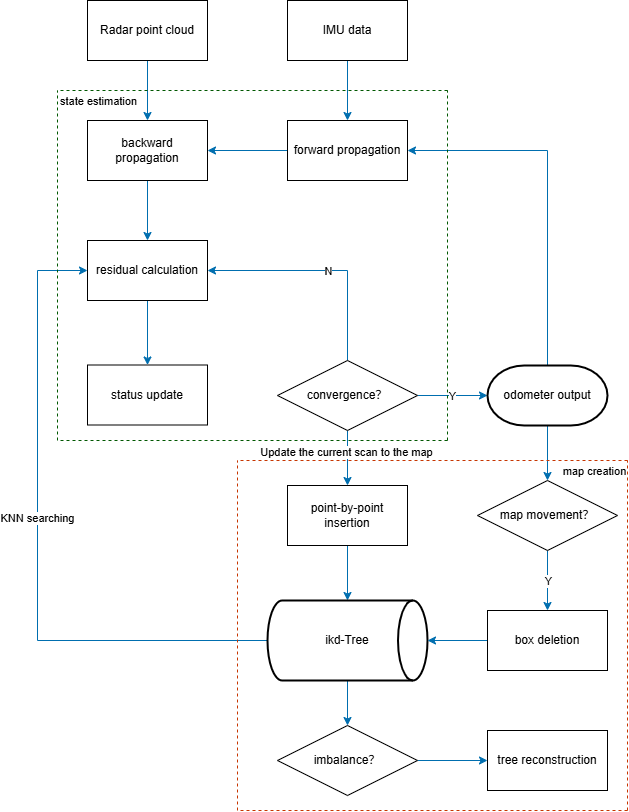
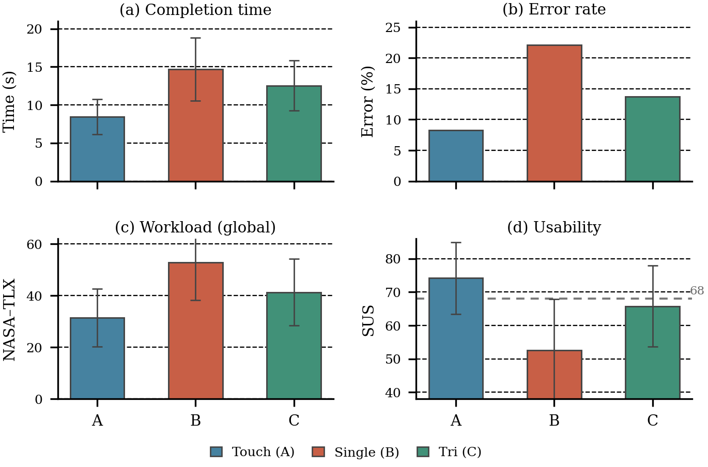

Trustworthy Autonomous Driving
Safety-critical testing, CAV ramp merging, SOTIF-aligned evaluation, adversarial scenario generation, and failure discovery for planning systems.
The University of Hong Kong / Computer Engineering
Robotics Autonomous Driving Multi-Agent AI Human-Centered Systems
Prospective MS / PhD applicant in CS, robotics, and AI
I am Zhenghao (Daniel) Yu, a Computer Engineering undergraduate at The University of Hong Kong. My work sits between robotics, AI, embedded systems, and human-computer interaction. I enjoy building systems that move from theory into messy environments: autonomous vehicles in dense merging traffic, wheel-leg robots in hospital corridors, and contactless interfaces in noisy, high-vibration cabins.
I care about reliable embodied intelligence: algorithms that are measurable, hardware-aware, and useful to people. My recent work includes MARL and diffusion-based safety testing for CAV ramp merging, multi-sensor navigation for a drug-delivery robot, and CAN/BMS/PCB development for humanoid robotic platforms.
Outside research, I train in the gym, practice boxing, and enjoy photography. These hobbies keep me disciplined, observant, and comfortable with patient iteration.
Safety-critical testing, CAV ramp merging, SOTIF-aligned evaluation, adversarial scenario generation, and failure discovery for planning systems.
MARL, diffusion trajectory refinement, game-theoretic reasoning, Nash and Stackelberg policies, and smooth coordination under partial observability.
Wheel-leg platforms, LiDAR/IMU/ultrasonic/infrared fusion, EKF localization, A*/JPS/DWA planning, and PID balancing control.
Contactless multimodal HCI, gaze-head-voice interaction, Wizard-of-Oz evaluation, usability metrics, and special-purpose vehicle interfaces.
(* indicates first author)

Accepted / in press / IEEE OJITS / 2026
Proposes Game-Diff MARL, combining diffusion-based trajectory refinement, game-theoretic strategy selection, and adaptive gating for robust CAV coordination in HighwayEnv. The framework reduces collision rate from 12.3% to 3.7% and improves failure discovery compared with random testing.

Published / ICEEGT 2025 / pp. 704-720
Designs and validates a wheel-leg hybrid drug-delivery robot for constrained hospital environments, integrating multi-sensor perception, EKF localization, optimized A* global planning, DWA local avoidance, and PID balancing control.

Accepted / JIKE / pending publication
Develops a gaze, head-confirmation, and voice-refinement interaction protocol for harsh vehicle cabins. A Wizard-of-Oz study with N = 30 participants shows reduced error rate and workload against a pooled single-modality contactless baseline.
Built a MARL and diffusion-based adversarial testing framework for highway merging, generated 2000+ valid safety-critical scenarios, achieved 92% effectiveness in triggering unexpected planning behavior, and improved failure detection by 85% over random testing.
Explored contactless in-vehicle interaction for off-road and engineering machinery under high noise and vibration, designing a three-layer perception-understanding-feedback architecture for multimodal fusion and conflict resolution.
Designed a wheel-leg robotic delivery system with less than 5 cm localization error, less than 10 cm path tracking error, 0.3 s dynamic obstacle response, and 98.2% obstacle avoidance success in hospital-style experiments.
Designed dual-layer CAN architecture and a 24-series lithium battery BMS for humanoid robotics, completed schematic and four-layer PCB layout for a sensor acquisition board, and contributed to HR160 electrical architecture design reviews.
BEng in Computer Engineering, Sept 2023 - Jun 2027
GPA 3.40 / 4.3, Top 15% among 2558 students.
Academic Exchange Program, Jun 2024 - Aug 2024
Coursework: Simulation Methods for Optimization and Learning (A).